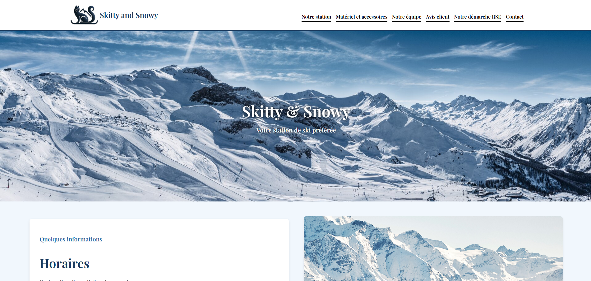
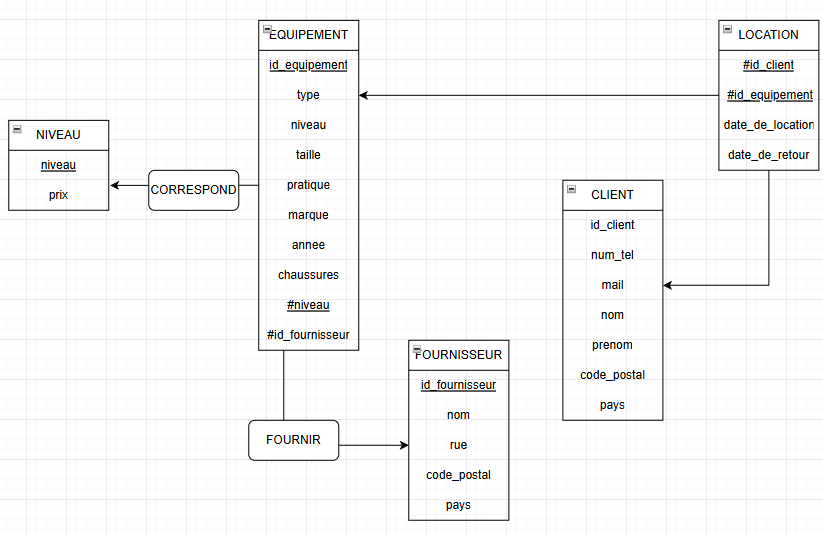

Ce projet a été réalisé durant ma première année en BUT Informatique, dans le cadre d’un travail de
groupe. L’objectif était de créer une entreprise fictive afin de mettre en pratique nos
apprentissages en base de données. Nous avons imaginé une entreprise de location de skis nommée
Skitty & Snowy. Le projet s’est déroulé sur plusieurs semaines et a mobilisé l’ensemble des membres
de l’équipe, chacun ayant des responsabilités spécifiques.
Objectif :
Le but principal était de concevoir un site web vitrine pour notre entreprise fictive, tout en
mettant en œuvre une base de données fonctionnelle pour gérer les réservations, les clients et le
stock de matériel. Ce projet visait à consolider nos compétences en HTML, CSS et SQL, et à nous
initier au travail collaboratif autour d’un livrable concret.
Travail réalisé :
J’ai travaillé principalement sur la structure et la présentation du site web. Je me suis chargé de
concevoir une interface responsive et ergonomique, en veillant à ce qu’elle soit cohérente avec
l’univers graphique de la marque. J’ai mis en œuvre des media queries pour que le site s’adapte
aussi bien aux écrans d’ordinateur qu’aux smartphones.
Parallèlement à l’aspect visuel, j’ai participé à la mise en place d’une base de données PostgreSQL
destinée à gérer les différents aspects de l’entreprise : réservations, clients, matériel. J’ai
appris à structurer une base de manière claire et à optimiser les requêtes pour de meilleures
performances.
Le travail a été réparti équitablement au sein du groupe, avec des réunions régulières pour
coordonner nos avancées.
Ce que ça m’a apporté :
Ce projet m’a permis d’appliquer concrètement les notions apprises en cours, notamment en HTML, CSS
et base de données. J’ai gagné en autonomie, en rigueur, et en capacité d’adaptation grâce aux
contraintes du responsive design. J’ai aussi découvert l’importance de la collaboration et de la
communication dans un projet de groupe. Enfin, cette expérience m’a donné une première vision
concrète du développement web et de la gestion de données en contexte professionnel.

Page d'accueil du site Skitty & Snowy

Modèle Logique de Données
Projet universitaire : Jeu de combat de monstres
Contexte :
Ce projet a été réalisé en binôme lors de mon premier semestre du BUT. La SAÉ s’est déroulée sur un
mois et le sujet consistait à développer un jeu en langage C, tout en utilisant différentes
structures de données et en comparant plusieurs algorithmes classiques de tri et de recherche.
Objectif :
Nous devions concevoir un jeu dans lequel un chevalier affronte successivement deux vagues de
monstres. Ce projet mettait en pratique la compétence « optimiser des applications informatiques ».
Pour cela, nous avons modélisé un problème algorithmique, implémenté et comparé plusieurs
algorithmes de tri (rapide, à bulle, par insertion), mis en œuvre des méthodes de recherche
(séquentielle et dichotomique), et utilisé diverses structures de données telles que des listes
chaînées, des piles, des files et des tableaux dynamiques.
Travail réalisé :
Nous avons donc développé le jeu en langage C en respectant le cahier des charges. Le joueur peut
jouer une partie à partir d’un fichier prédéfini ou personnalisé, consulter la liste des joueurs
triés par pseudo ou par score, et accéder aux statistiques détaillées d’un joueur.
Côté technique, nous avons utilisé six structures de données: des structures Chevalier et
MaillonScore pour gérer les joueurs et leurs scores, une structure Monstre, une pile pour la
première vague de monstres, une file pour la seconde, et un tableau dynamique pour stocker
efficacement les joueurs.
Nous avons implémenté plusieurs algorithmes : tri rapide (classement par score), tri à bulle (tri
alphabétique des joueurs), tri par insertion (ajout de scores), ainsi que des recherches linéaire et
dichotomique.
Enfin, de nombreux tests ont été menés pour vérifier le bon fonctionnement des fonctionnalités
principales du jeu, notamment l’ajout de scores, la gestion des monstres, et la recherche de
joueurs.
Ce que ça m’a apporté :
Ce projet m’a permis d’améliorer mes compétences en langage C, surtout pour utiliser différentes
structures de données. J’ai appris à mieux organiser un projet, à choisir les bons algorithmes selon
les besoins, et à gérer des fichiers pour sauvegarder les données. Travailler en binôme m’a aussi
appris à bien communiquer et à partager les tâches. Cela m’a aidé à mieux comprendre comment rendre
un programme plus efficace.